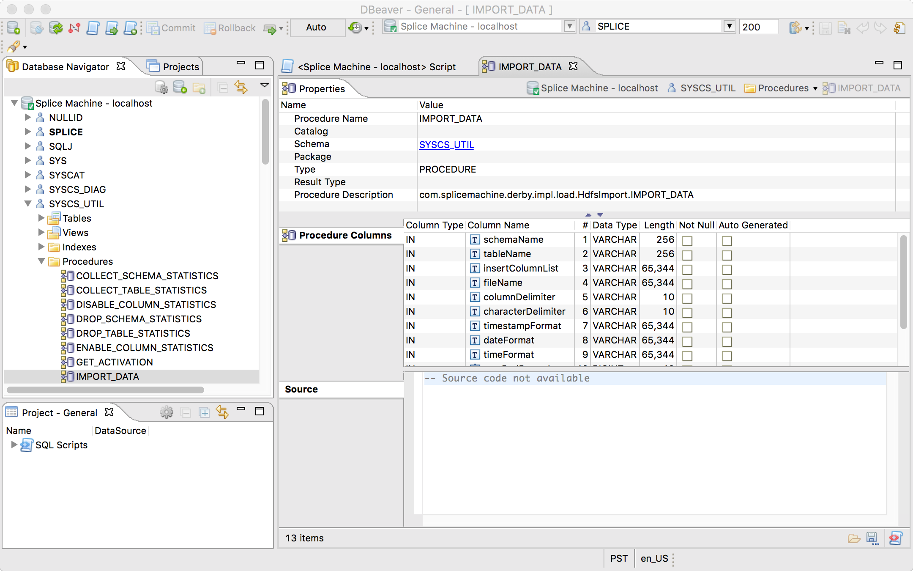
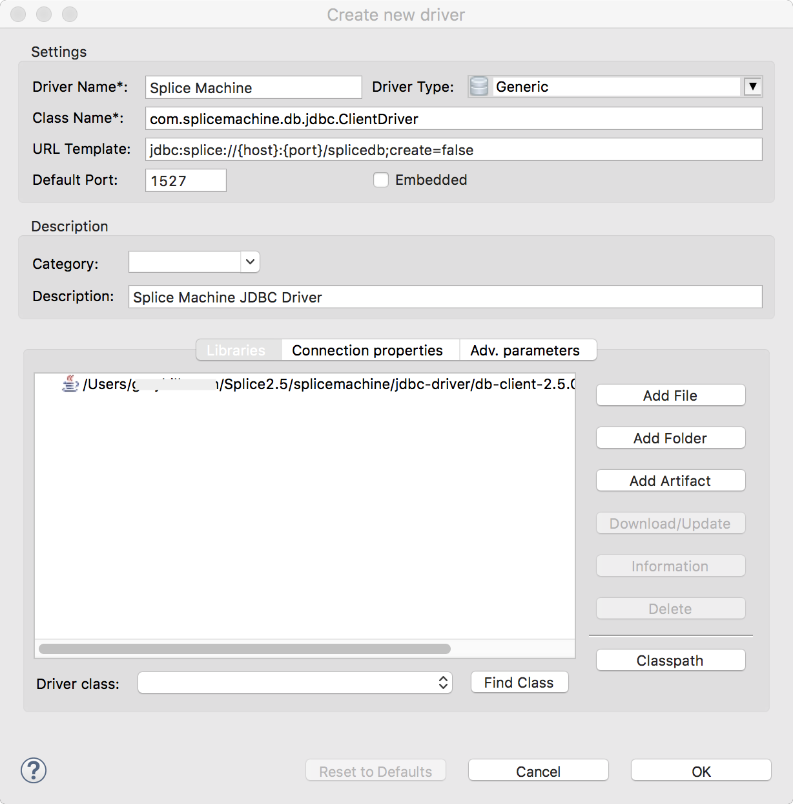
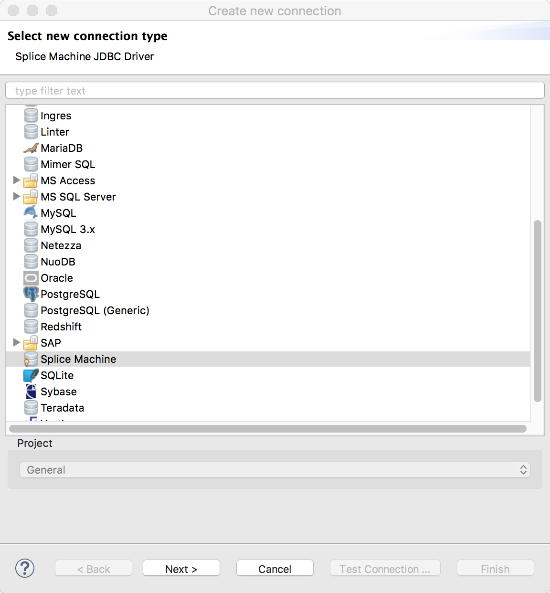
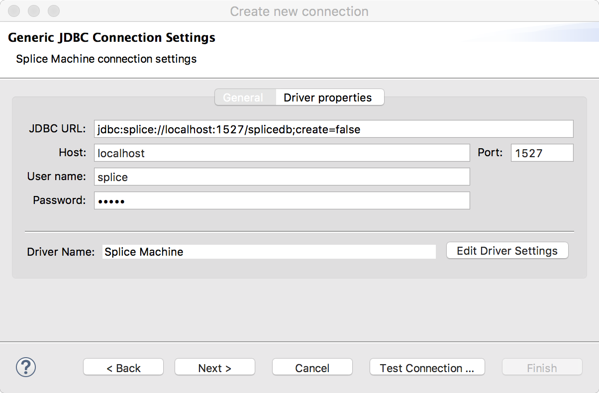
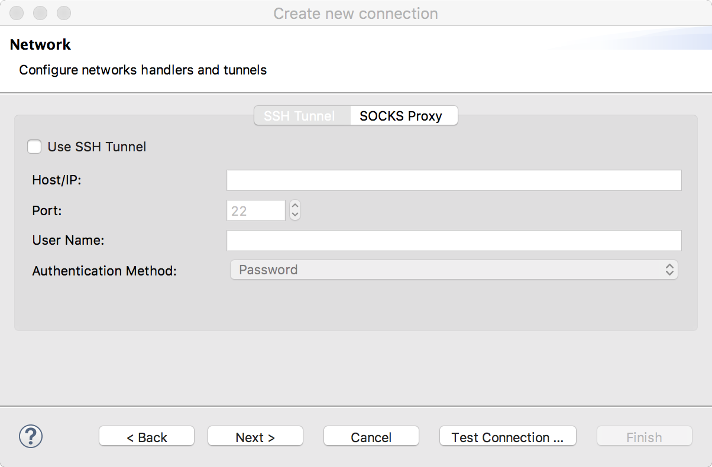
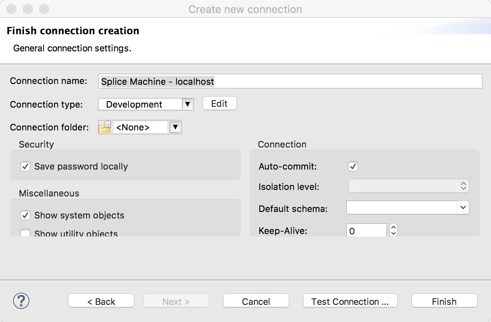

Connecting DBeaver with Splice Machine Using JDBC
This topic shows you how to connect DBeaver to Splice Machine using our JDBC driver. To complete this tutorial, you need to:
- Have Splice Machine installed and running on your computer.
- Have DBeaver installed on your computer. You can download an installer and find directions on the DBeaver web site (dbeaver.jkiss.org).
Connect DBeaver with Splice Machine
This section walks you through configuring DBeaver to connect with Splice Machine
-
Install DBeaver , if you’ve not already done so
-
Start a Splice Machine session on the computer on which you have installed DBeaver
Splice Machine must be running to create and use it with DBeaver .
-
Configure a Splice Machine connection in DBeaver
Follow the instructions in the next section, Configure a DBeaver Connection for Splice Machine, to create and test a new connection in DBeaver .
-
Connect DBeaver to Splice Machine
In DBeaver’s Database Navigator, select the Splice Machine connection you configured. Your database will display, and you can inspect objects or enter SQL to interact with your data.

Configure a DBeaver Connection for Splice Machine
Follow these steps to configure and test a new driver and connection alias in DBeaver .
- Start a Splice Machine session on the computer on which you have installed DBeaver
- Open the DBeaver application.
-
Select Driver Manager in the DBeaver Database menu, then click the New button to create a new driver:
-
Specify values in the Create New Driver form; these are the default values:
Field Value Driver Name: Any name you choose Class Name: com.splicemachine.db.jdbc.ClientDriverURL Template: jdbc:splice://{host}:{port}/splicedb;create=falseDefault Port: 1527Description: Any description you want to specify -
Click the Add File button, then navigate to and select the Splice JDBC Driver jar file. which you’ll find it in the
jdbc-driverfolder under thesplicemachinedirectory on your computer.
Instead of manually entering the Class Name for your driver, you can click the Find Class button to discover the driver class name associated with the file you’ve located.
-
- Click OK to save the driver entry and close the form.
-
Select New Connection in the DBeaver Database menu, then follow these steps to create a new connection that uses our driver:
-
Scroll through the connection type list and select the Splice Machine JDBC driver that you just created, then click the Next button:

-
Several of the fields in the Generic JDBC Connection Settings screen were pre-populated for you when you selected the driver. You need to fill in the User name: (default is
splice) and Password: (default isadmin) field values:
-
Click the Test Connection button to verify your connection.
Splice Machine must be running on your computer for the connection test to succeed.
-
Click the Next button to reveal the network configuration screen. If you have VPN requirements, enter the appropriate information in this screen; if not, simply click the Next button again.

-
You can optionally modify any settings in the Finish connection creation screen; then click the Finish button to save your new connection.

-